Curhat Tanpa Takut,
Konseling Tanpa Ribet
Temukan ruang aman untuk berbagi dan bertumbuh bersama


Talk ZoneTemukan ruang aman untuk berbagi dan bertumbuh bersama
Di balik layar platform ini, kami adalah sekelompok anak muda yang percaya bahwa setiap orang berhak didengar, dimengerti, dan didampingi. Kami hadir untuk menciptakan ruang konseling yang ramah, mudah diakses, dan bebas stigma, tempat di mana kamu bisa curhat tanpa takut, bertumbuh tanpa tekanan.
Kami menggabungkan teknologi dengan empati, menghadirkan layanan konseling online yang intuitif, aman, dan penuh makna. Dengan pendekatan yang berpusat pada pengguna, kami ingin menjembatani kebutuhan emosional dan spiritual generasi masa kini.
Visi kami adalah membangun ekosistem kesehatan mental yang inklusif dan berkelanjutan, khususnya bagi komunitas muda dan keluarga di Indonesia.
Kami bukan sekadar platform. Kami adalah teman seperjalananmu dalam proses penyembuhan dan pertumbuhan.
"Awalnya aku ragu buat curhat ke konselor online. Tapi setelah sesi pertama, aku merasa lebih ringan dan dimengerti. Rasanya seperti ngobrol sama teman yang nggak menghakimi."
"Awalnya aku ragu buat curhat ke konselor online. Tapi setelah sesi pertama, aku merasa lebih ringan dan dimengerti. Rasanya seperti ngobrol sama teman yang nggak menghakimi."
"Awalnya aku ragu buat curhat ke konselor online. Tapi setelah sesi pertama, aku merasa lebih ringan dan dimengerti. Rasanya seperti ngobrol sama teman yang nggak menghakimi."
"Awalnya aku ragu buat curhat ke konselor online. Tapi setelah sesi pertama, aku merasa lebih ringan dan dimengerti. Rasanya seperti ngobrol sama teman yang nggak menghakimi."